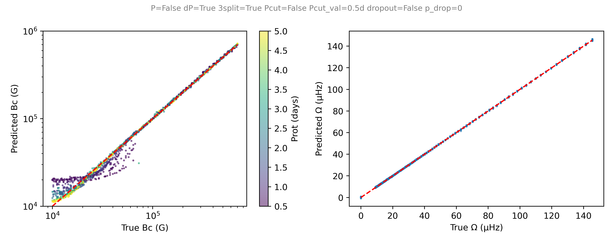
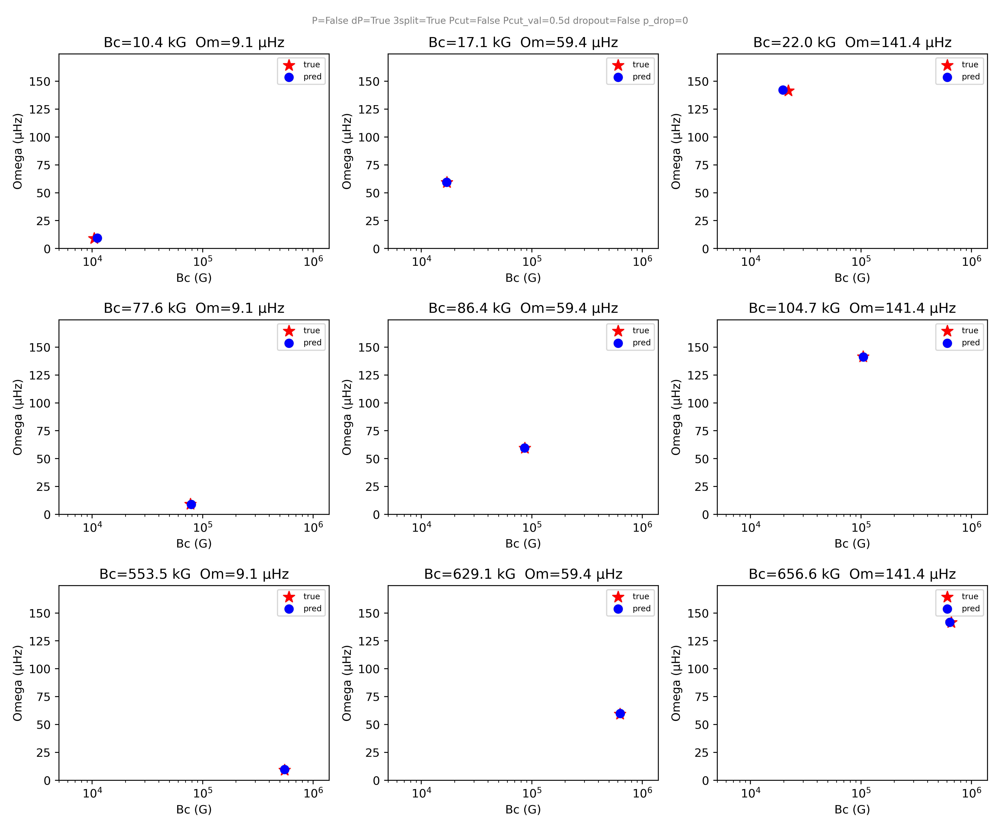
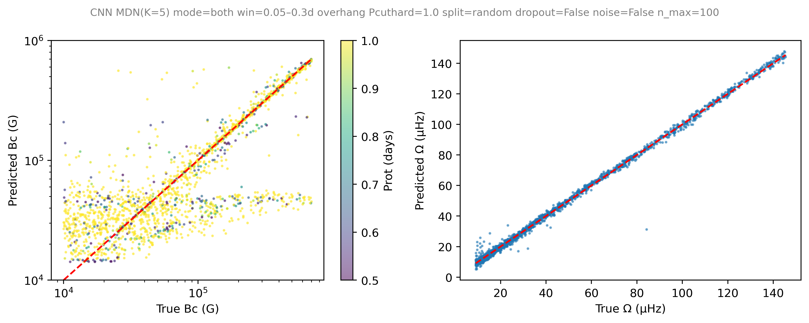
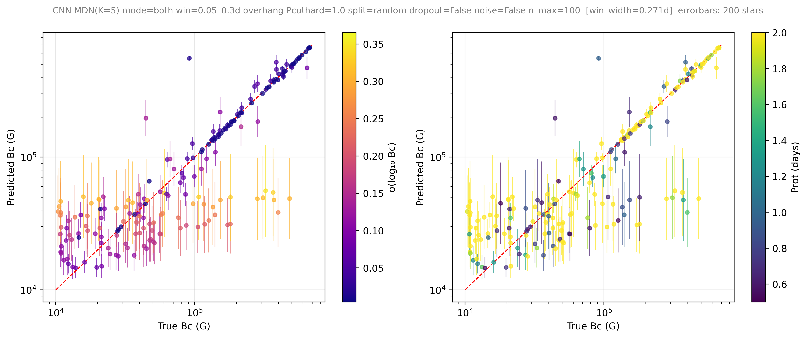

Inferring Internal Magnetic Fields and Rotation in Stars with Machine Learning
Main sequence stars can harbor strong internal magnetic fields whose origins and influence on stellar evolution remain poorly understood. Gravity modes - stellar oscillations restored by buoyancy deep in the stellar interior - carry direct imprints of interior stellar structure and offer a rare observational window into otherwise inaccessible regions. The Kepler space telescope has revealed these oscillations in several hundred γ Doradus (γ Dor) stars, which are oscillating intermediate-mass main sequence stars, through their characteristic period-spacing patterns, the nearly uniform spacing between consecutive radial modes that encodes rotation, chemical gradients, and magnetic field strength.
I developed a machine learning pipeline to jointly infer the internal magnetic field strength Bc and internal rotation rate Ω of γ Dor stars directly from their observed mode periods. Forward models are computed using the Traditional Approximation of Rotation and Magnetism (TARM; Rui, Ong & Mathis 2023), which provides a non-perturbative treatment of g-mode frequencies under simultaneous rotation and magnetic fields (essential in the regime where both effects are large). A library of synthetic period-spacing patterns spanning field strengths of ~10 kG to ~1 MG and rotation rates spanning the observed γ Dor population is used to train a neural network that learns the mapping from observed periods to physical parameters. The neural network is a 1D convolutional network that processes the sequence of mode periods and period spacings as two parallel channels, producing a mixture density output over Bc — giving a full posterior distribution per star rather than a point estimate. The synthetic data is significantly augmented during training and testing with window cuts, noise, and missing modes to simulate observational limitations.

Fig 1: Recovery of Bc and Ω on held-out test data, colored by rotation period. Point estimates for Bc correspond to the mean of the highest-weight component of a K=5 Gaussian mixture (MDN); Ω is predicted directly via MSE. Both parameters are recovered across the full training range when the model is trained on period spacing and there is no observational period cut.

Fig 2: Individual test examples spanning the Bc–Ω parameter space, showing predicted (blue) vs. true (red) values. Without a period cut, Bc is well recovered across the full range.
The pipeline achieves clean recovery of both parameters on held-out test data with no mode period cuts (Figs. 1, 2). The field strength and rotation rate are recovered well for unseen values, suggesting the network learns the underlying physical relationship between period spacing and stellar parameters rather than memorizing the training grid. When realistic mode period cuts are applied (Figs. 3, 4), Ω is still always recovered well and Bc is generally recovered well for high Bc, with many models laying on the diagonal with small errorbars. Although is a significant branch of cases where Bc is predicted to be lower than actual (Fig. 4, points at intermediate-high Bc, below the diagonal) such stars are associated with large errorbars, demonstrating that the neural net was unable to make a good estimate of Bc and acting as a reliable quality flag. Bc recovery degrades at low field strengths, as the characteristic period Pcrit - where the magnetic field suppresses modes - shifts far outside the observable window, making the magnetic signature invisible. Future extensions will incorporate full stellar model grids to simultaneously constrain additional parameters such as mass, metallicity, and convective overshooting, enabling population-level inference across γ Dor catalogs containing a large number of stars with observed oscillation modes.

Fig 3: Similar to Fig. 1, but with mode period window cuts applied, so the neural net never sees the full range of theoretical mode periods. Bc recovery degrades at low field strengths (under 100 kG), where Pcrit tends to fall far outside the observable window and the curvature signal in the period spacing becomes small. Ω is always recovered well over the modelled range.
